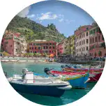
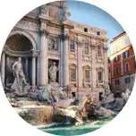
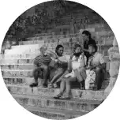

- Italia
Ce pays n’est pas celui de tes origines, du moins pas directement. Cependant au fil de ta jeunesse, tu
développes...

- Petit coin de paradis
Ton petit coin de paradis. En cinq jours, il a conquérir le cœur de toi, tes sœurs, et sans aucun doutes,
les milliers d’autres visiteurs...
- Le temps des fleurs
Le temps des fleurs, chansons chère à ton cœur, elle te rend pleine de nostalgie. Lorsque tu l’écoutes,
tu te revois...
- ...And I'll call you by yours
Agée de 17 ans, tu découvres Call me by your name et il met en image ce que tu aimes dans les films
romantiques...

- Le voyage du futur
Avoir la vingtaine en 2022 n’est pas anodin, nous avons vécu des choses inédites les années
précédentes...

- Nuire à la biodiversité
Instagram, l’un des plus grand réseaux sociaux de notre ère, qui a initialement pour simple but de poster
des photos prises par les utilisateurs, a pris une ampleur énorme ces dernières années...